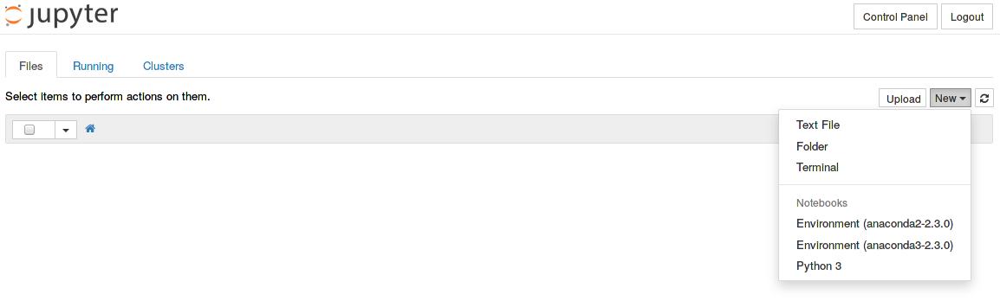
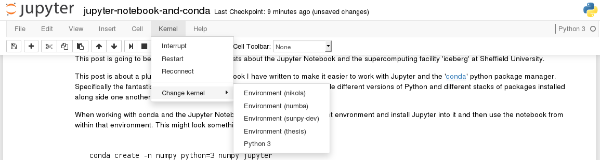

Jupyter Notebook and Conda
This post is going to be the first in a series of posts about the Jupyter Notebook and the supercomputing facility 'iceberg' at Sheffield University.
This post is about a plugin for the Jupyter Notebook I have written to make it easier to work with Jupyter and the conda python package manager. Specifically the fantastic environments feature, which allow you to have multiple different versions of Python and different stacks of packages installed alongside one another.
When working with conda and the Jupyter Notebook you can create a different envronment and install Jupyter into it and then use the notebook from within that environment. This might look something like this:
conda create -n numpy python=3 numpy jupyter
source activate numpy
jupyter notebookThis approach works fine, but what happens if you want to switch to running your current notebook in the "numpy-1.9" envronment instead to test it with a previous version of NumPy? You would have to do this:
Stop the notebook sever then:
source deactivate
source activate numpy-1.9
jupyter notebookThen reload the notebook you had open before.
What my Notebook plugin does is enables you to switch environments from within a running notebook server, but using the "kernel" feature of the Notebook.

Each entry in the kernel list above that starts with 'Environment' is a conda environment that has Jupyter installed within it, and you can start a notebook using any of those envronments.
The plugin that enables this is jupyter_envrionment_kernels (catchy name I know). It looks in the directories you specify for installed environments which have Jupyter installed (the ipython executable is in the bin/ directory) and lists them as kernels for Jupyter to find. This makes it easy to run one notebook instance and access kernels with access to different versions of Python or different modules seamlessly.
To solve our earlier problem of "live" switching the kernel we can use the Kernel > Change Kernel menu:

Installing jupyter_environment_kernels¶
Installation of the package is easy just run
pip install environment_kernelsfrom within the environment in which you want to run the notebook server.
Then run:
jupyter notebook --generate-configto generate a Jupyter notebook config file (if you already have one then skip this step), finally edit the config file it has generated (by default this is ~/.jupyter/jupyter_notebook_config.py) and add the following two lines:
c.NotebookApp.kernel_spec_manager_class = 'environment_kernels.EnvironmentKernelSpecManager'
c.EnvironmentKernelSpecManager.conda_env_dirs=['~/.conda/envs']The first line tells the notebook to use the environment_kernels module to manage the kernels, and the second line lists all the directories in which to look for environments with ipython executables. By default (i.e. if you don't provide the second line) it will look in ~/.conda/envs and ~/.virtualenvs where the top level directory is assumed to be the name of the environment and then it looks inside the bin directory for ipython.
It is also possible to configure the package to use the conda terminal command to find your environments. This will only work if conda is availble from where you ran the notebook command (i.e. you installed the notebook using conda). To use this you just need the:
c.NotebookApp.kernel_spec_manager_class = 'environment_kernels.EnvironmentKernelSpecManager'configuration line.
This module is still very new so if you enounter any issues please raise issues on GitHub.

Comments